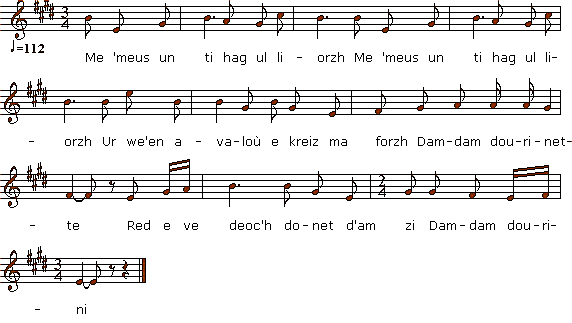

|
Ur paotr yaouank d'e zousig 1. Me 'meus un ti hag ul liorzh (bis) Ur we'en avaloù e-kreiz ma forzh Damdam dourinette Red e ve deoc'h donet d'am zi Dam dam dourini 2. Tri re votoù am eus uzet Va dous eoc'h ho tarempredet 3. Etre ho ti ha va hini 'Zo ur gwarem yoa leun a bri 4. Ha me he meveuz he rinset Va dous oc'h ho tarempredet 5. Ar glav, an a'el ouzh va flipañ Lost va chupenn o tiverañ |
Un jeune homme à sa douce 1. Je possède une maison et un courtil (bis) Un pommier au milieu de ma cour Damdam dourinette Il vous faudrait venir chez moi Dam dam dourini 2. J'ai usé trois paires de sabots, Ma douce, à vous faire la cour 3. Entre votre maison et la mienne Il y a un chemin creux rempli de boue 4. Et c'est moi qui l'ai nettoyé Ma douce, à vous faire la cour 5. La pluie, le vent me léchant Mon chupenn ruisselant d'eau |
A Young Man's courtship to his sweetheart 1. I have a house, a kitchen yard (twice) An apple tree 'midst the front yard Damdam dourinette You ought to come and see my house. Dam dam dourini 2. I have worn out six pairs of clogs Since I started wooing you, dear. 3. Between your house and mine, the path Was a maze of ruts full of mud. 4. I was the one who cleared it, Sweatheart, by walking to and fro. 5. In pouring rain and howling wind With my jacket streaming with rain. |
|
"Un autre chanteur qui ne connaissait que le 1er couplet, nous le donnait ainsi que suit: Me 'm eus ur park hag ul liorzh Ur vilin dour e-tal va forzh." Je possède un champ et un courtil (jardin), Un moulin à eau devant ma cour. |
Another singer who knew but the first stanza would sing it as follows: Me 'm eus ur park hag ul liorzh Ur vilin dour e-tal va forzh." I own a field and a yard, A water mill in front of my garden. |